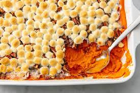

Sweet Potato Casserole Recipe

Sweet Potato Casserole
Sweet potatoes topped with creamy toasted marshmallows.
Ingredients
- 5 sweet potatoes, sliced
- Quarter cup reduced fat margarine
- Half cup packed brown sugar
- 3 tablespoons orange juice
- 1 pinch ground cinnamon
- 1 (10.5 ounce) package miniature marshmellows
Directions
- Preheat oven to 350 degrees F (175 degrees C).
- Place sweet potatoes in a large saucepan with enough water
to cover.
Bring to a boil, and cook until tender, about 15
minutes. Remove from
heat, drain, and mash.
- Place mashed sweet potatoes in large bowl, and use an electric
mixer
to blend with the margarine, brown sugar, orange juice,
and cinnamon.
Spread evenly into a 9x13 inch baking dish. Top
with miniature marshmallows.
- Bake for 25 to 30 minutes in the preheated oven, or until heated
through, and marshmallows are puffed and golden brown.
Back to homepage